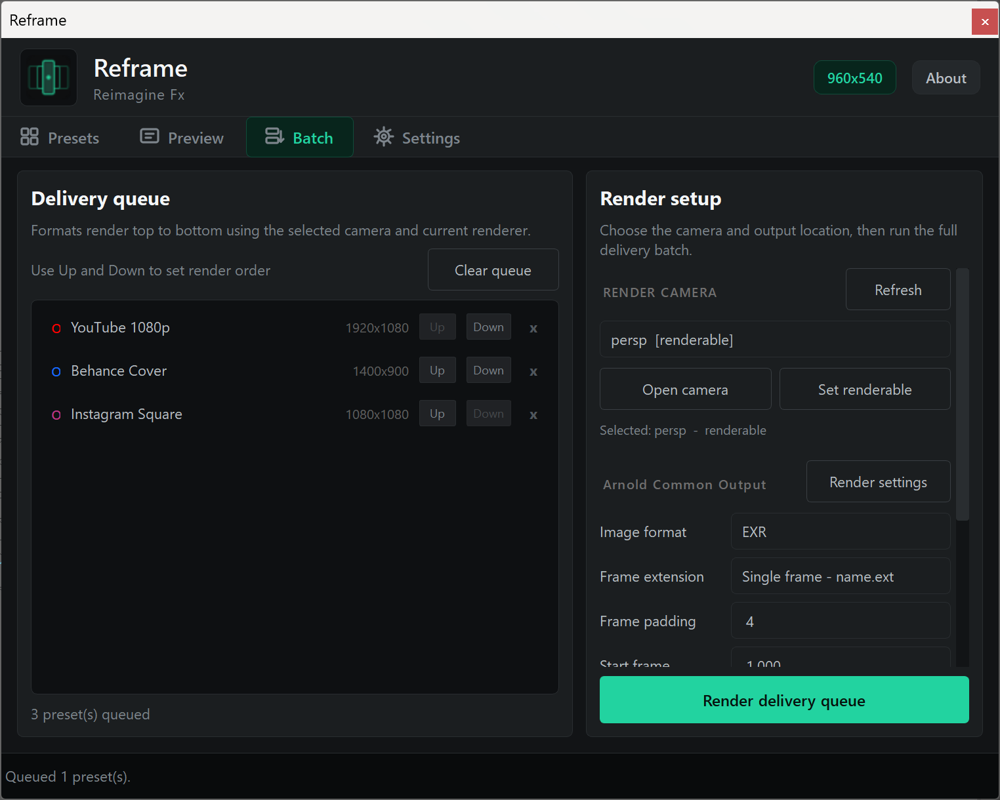
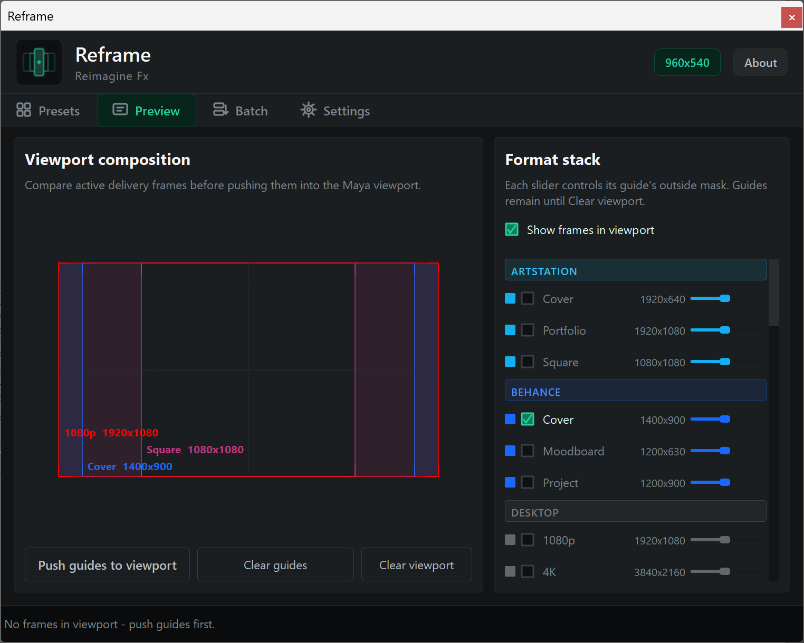
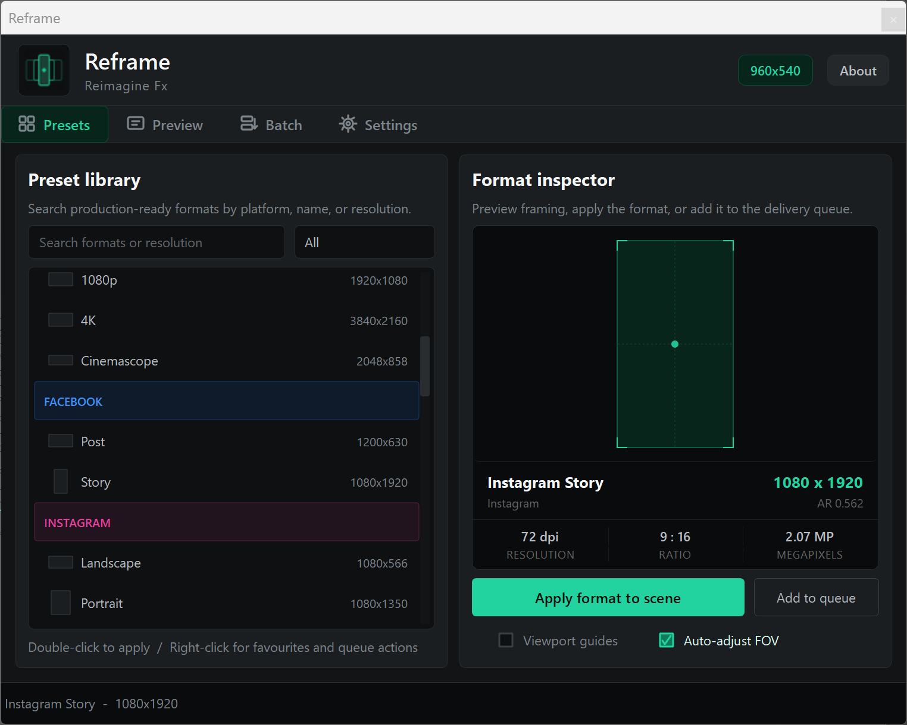
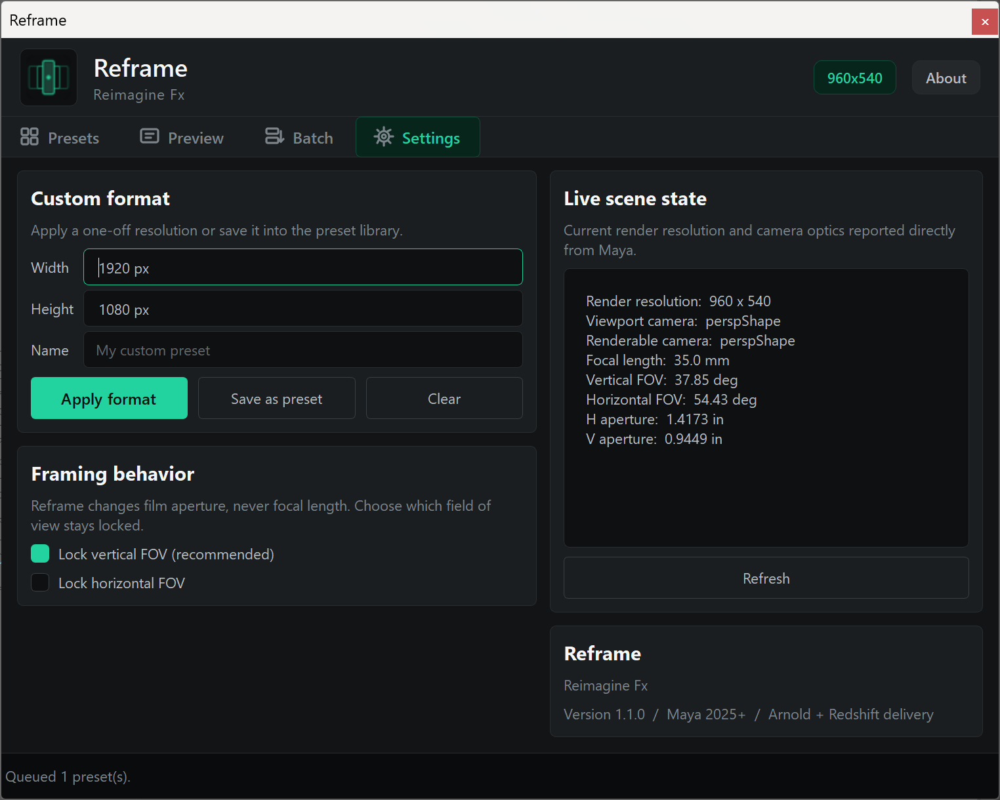

ReframeReimagine Fx
V1.1
Maya delivery / Redshift update
One queue.
Two renderers.
Ordered stills and image sequences through Arnold or Redshift.
ArnoldRedshift

Exact Reframe UIRenderer-aware delivery
Ordered stills and image sequences through Arnold or Redshift.

Compare formats, adjust each outside mask, and keep overlapping guides readable.

Each image sequence lands in its own preset-named folder.
Plan the crops. Keep the camera. Deliver through Arnold or Redshift.

Search 39 production presets, inspect the crop, apply it, save a favourite, or add it to the queue.
Stack several formats, tune each mask, and keep the labels readable when frames overlap.
Reframe adjusts film aperture and preserves the vertical or horizontal field of view you choose.

Move presets into order, open the render camera, and keep output settings visible in one panel.
Arnold and Redshift share one workflow for stills, sequences, frame range, padding, per-preset folders, and cancellation.
Reframe 1.1 is built for Maya artists delivering one scene to many formats.
Live composition guides and ordered Arnold + Redshift rendering.
Three formats, separate folders, current renderer.
Search, inspect, preview, apply, and queue every delivery format.